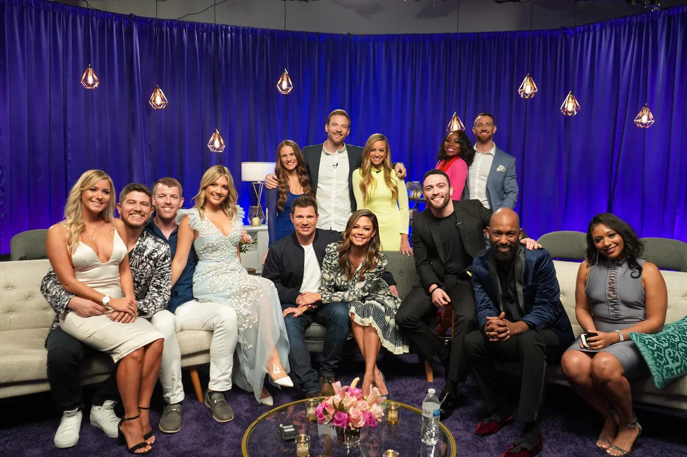
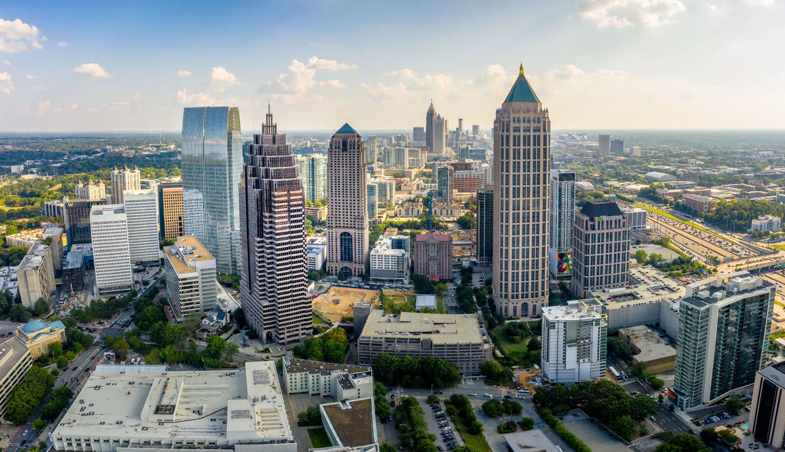
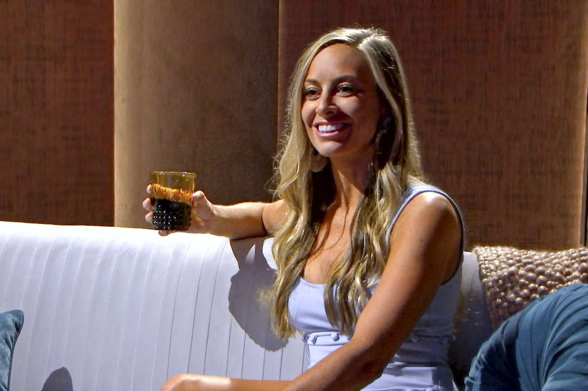
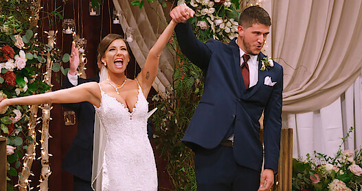

Season 1
The first season of Love Is Blind premiered on Netflix on February 13, 2020, and concluded on February 27, 2020. A reunion episode was released on March 5, 2020, and a three-part companion piece entitled After the Altar was released on July 28, 2021. The season followed singles from Atlanta, Georgia.
Drama Meter
🔥🔥🔥🔥🔥/5
Romance Factor
💖💖💖💖/5
Overall Rating
⭐⭐⭐⭐⭐/5




